Symmetry based analysis of instabilities in a plate with stiffened edge (Jump to thesis)
PhD Oral Examination
 Department of Mechanical Engineering
Department of Mechanical Engineering
Indian Institute of Technology Kanpur
Supervisor: Prof. Basant Lal Sharma
Motivation
Motivations for the stiffened edge structure

Motivations for the stiffened edge structure
Motivations for the stiffened edge structure


Tools for the Study
Description of the system
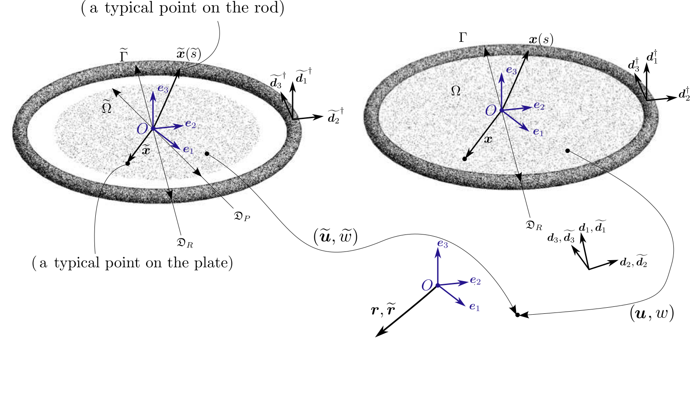
Formulation
Kinematic fields
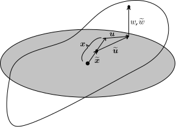
\[ \boldsymbol{x}=\frac{\widetilde{\boldsymbol{x}}}{\lambda}, \quad \text{where }\lambda{:=}\frac{\mathfrak{D}_{P}}{\mathfrak{D}_{R}}\]
\[ \widetilde{\boldsymbol{u}}:\widetilde{\Omega}\to\mathbb{R}^{2},\quad \widetilde{w}:\widetilde{\Omega}\to\mathbb{R} \] \[ \boldsymbol{u}(\boldsymbol{x})%=\hcon{\mbs{u}}\left(\frac{\scon{\mbs{x}}}{\lambda}\right) =\widetilde{\boldsymbol{u}}(\widetilde{\boldsymbol{x}})-(\frac{1}{\lambda}-1)\widetilde{\boldsymbol{x}},\quad %\label{eq:inplane_disp_trans}\\ w(\boldsymbol{x})%=\hcon{w}\left(\frac{\scon{\mbs{x}}}{\lambda}\right) =\widetilde{w}(\widetilde{\boldsymbol{x}}) \]
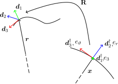
\[ \boldsymbol{r}:\Gamma\to\mathbb{R}^{3}\] \[ \boldsymbol{g}:\Gamma\to\mathbb{R}^{3}\]
\[ {\mathbf{R}}(\boldsymbol{g}):=\frac{1}{1+{\boldsymbol{g}}\cdot\boldsymbol{g}}(({1-\boldsymbol{g}\cdot\boldsymbol{g}})\mathbf{I}+{2}{\boldsymbol{g}}\otimes\boldsymbol{g}+{2}\mathrm{skw}(\boldsymbol{g})) \]
Compatibility relation: \[ \boldsymbol{r}(s)-\boldsymbol{x}(s)=\boldsymbol{u}(\boldsymbol{x}(s))+w(\boldsymbol{x}(s))\boldsymbol{e}_{3}\] \[\text{for all $s\in\Gamma$}\]
Strains and Constitutive relationship
\[\text{Strains in plate }(\widetilde{\Omega}) \] \[\widetilde{\mathbf{E}}{:=}\frac{1}{2}\left(\widetilde{\nabla}\widetilde{\boldsymbol{u}}+\widetilde{\nabla}\widetilde{\boldsymbol{u}}^{\top}+\widetilde{\nabla}\widetilde{w}\otimes\widetilde{\nabla}\widetilde{w}\right)\] \[\widetilde{\mathbf{K}}{:=}-\widetilde{\nabla}\widetilde{\nabla}\widetilde{w}\]
\[\text{Strains in Rod }(\widetilde{\Gamma}) \] \[\widetilde{\boldsymbol{\kappa}}{:=}\widetilde{\boldsymbol{d}_{3}}^\dagger\wedge(\widetilde{\mathbf{R}}^{\top}\widetilde{\mathbf{R}}'\widetilde{\boldsymbol{d}_{3}}^{\dagger})\] \[\widetilde{\tau}{:=}\widetilde{\boldsymbol{d}_{2}}^{\dagger}\cdot(\widetilde{\mathbf{R}}^{\top}\widetilde{\mathbf{R}}'\widetilde{\boldsymbol{d}_{1}}^{\dagger})\]
\[\text{Constraints on Rod }(\widetilde{\Gamma}) \] \[\widetilde{\boldsymbol{r}}'\cdot\widetilde{\mathbf{R}}\widetilde{\boldsymbol{d}_{3}}^{\dagger}-1=0\] \[\widetilde{\boldsymbol{r}}'\wedge\left(\widetilde{\mathbf{R}}\widetilde{\boldsymbol{d}_{3}}^{\dagger}\right)=\boldsymbol{0}\]
\[\text{Strain energy in Plate }(\widetilde{\Omega}) \] \[\overline{W}_{m}(\widetilde{\mathbf{E}}):=\frac{Eh}{2(1-\nu^2)}\big(\nu(\widetilde{\mathbf{E}})^2+(1-\nu){\widetilde{\mathbf{E}}}:{\widetilde{\mathbf{E}}}\big)\] \[\overline{W}_{b}(\widetilde{\mathbf{K}}):=\frac{Eh^3}{24(1-\nu^2)}\big(\nu(\widetilde{\mathbf{K}})^2+(1-\nu){\widetilde{\mathbf{K}}}:{\widetilde{\mathbf{K}}}\big)\]
\[\text{Strain energy in Rod }(\widetilde{\Gamma}) \] \[\overline{W}_{R}(\widetilde{\boldsymbol{\kappa}},\widetilde{\tau}):=\frac{1}{2}\left(\overline{\beta}\widetilde{\boldsymbol{\kappa}}\cdot\widetilde{\boldsymbol{\kappa}}+\overline{\gamma}\widetilde{\tau}^2\right)\]
\[\text{Potential Energy Fiunctional}\] \[\overline{\mathcal{V}}(\boldsymbol{u}, w, \mathbf{R}, n_{||},\boldsymbol{n}^{L},{\varpi}):=\int_{\widetilde{\Omega}}\left(\overline{W}_{m}(\widetilde{\mathbf{E}})+\overline{W}_{b}(\widetilde{\mathbf{K}})\right)\mathrm{d}\widetilde{A}+\int_{\widetilde{\Gamma}}\overline{W}_{R}(\widetilde{\boldsymbol{\kappa}},\widetilde{\tau})\mathrm{d}\widetilde{l}\] \[\quad+\int_{\widetilde{\Gamma}}\overline{n}_{||}(\widetilde{\boldsymbol{r}}'\cdot\widetilde{\mathbf{R}}\widetilde{\boldsymbol{d}_{3}}^{\dagger}-1)\mathrm{d}\widetilde{l}+\int_{\widetilde{\Gamma}}\overline{\boldsymbol{n}}^{L}\cdot(\widetilde{\boldsymbol{r}}'\wedge\left(\widetilde{\mathbf{R}}\widetilde{\boldsymbol{d}_{3}}^{\dagger}\right))\mathrm{d}\widetilde{l} +\int_{\widetilde{\Gamma}}\overline{\varpi}\overline{\boldsymbol{n}}^{L}\cdot(\widetilde{\mathbf{R}}\widetilde{\boldsymbol{d}_{3}}^{\dagger})\mathrm{d}\widetilde{l}\]
\[\overline{n}_{||} :\Gamma\to\mathbb{R}\] \[\overline{\boldsymbol{n}}^{L} :\Gamma\to\mathbb{R}^{3}\] \[\overline{\varpi} :\Gamma\to\mathbb{R}\]
Equations of equilibrium
\[\nabla\cdot{\mathbf{N}}=\boldsymbol{0}\] \[\nabla\cdot({\mathbf{N}}\nabla w+\nabla\cdot{\mathbf{M}})=0\] \[(\boldsymbol{m}_{\perp}+\boldsymbol{m}_{||})'-\boldsymbol{n}\wedge\boldsymbol{r}'-{\varpi}\boldsymbol{d}_{3}\wedge\boldsymbol{n}^{L}=\boldsymbol{0}\] \[(\mathbf{I}-\boldsymbol{e}_{3}\otimes\boldsymbol{e}_{3})\boldsymbol{n}'-\lambda {\mathbf{N}}\boldsymbol{\nu}=\boldsymbol{0}\] \[\boldsymbol{n}'\cdot\boldsymbol{e}_{3}-(( {\mathbf{N}}\nabla w+\nabla\cdot {\mathbf{M}})\cdot\boldsymbol{\nu}+\nabla({\boldsymbol{\xi}}\cdot {\mathbf{M}}\boldsymbol{\nu})\cdot{\boldsymbol{\xi}})=0\] \[\boldsymbol{\nu}\cdot {\mathbf{M}}\boldsymbol{\nu}=0\] \[\boldsymbol{r}'\cdot\boldsymbol{d}_{3}-1=0\] \[\boldsymbol{r}'\wedge\boldsymbol{d}_{3}+{\varpi}\boldsymbol{d}_{3}=\boldsymbol{0}\] \[\boldsymbol{n}^{L}\cdot\boldsymbol{d}_{3}=0\]
\[\boldsymbol{n}:=-\boldsymbol{n}^{L}\wedge(\mathbf{R}\boldsymbol{d}_{3}^{\dagger})+n_{||}\mathbf{R}\boldsymbol{d}_{3}^{\dagger},\ \boldsymbol{\xi}:=\boldsymbol{e}_{\vartheta},\ \boldsymbol{\nu}:=\boldsymbol{e}_{r}\] \[\mathbf{N}:=\frac{12}{\lambda}\left((\nu\text{ tr}\mathbf{E})\mathbf{I}+(1-\nu)\mathbf{E}\right)\] \[\ +6\frac{1-\lambda}{\lambda^{2}}\left((\nu\mathrm{ tr}(\nabla w\otimes\nabla w))\mathbf{I}+(1-\nu)\nabla w\otimes\nabla w\right)\] \[\ +12(1+\nu)\frac{1-\lambda}{\lambda}\mathbf{I}\] \[\mathbf{M}:=\frac{1}{\lambda^{2}}h^2\left((\nu\text{ tr}\mathbf{K})\mathbf{I}+(1-\nu)\mathbf{K}\right)\]
\[\boldsymbol{u}(\boldsymbol{x})=\boldsymbol{0},\ w(\boldsymbol{x})=0,\ \boldsymbol{g}(s) = \boldsymbol{0},\ \boldsymbol{n}(s)=6\mathfrak{D}_{R}(1+\nu)(1-\lambda)(-1){\boldsymbol{\xi}}(s)\]
\[\mathfrak{F}(\boldsymbol{V}, \lambda)=\boldsymbol{0}\]
\[\mathfrak{F}(\boldsymbol{V}, \lambda) := \left( \begin{aligned} & \nabla \cdot \mathbf{N} \\ & \nabla \cdot (\boldsymbol{f} + \nabla \cdot \mathbf{M}) \\ & 12((1-\nu)\mathbf{E}_\lambda + \nu(\text{tr } \mathbf{E}_\lambda)\mathbf{I}) - \mathbf{N} \\ & -\frac{h^2}{\lambda^2}((1-\nu)\nabla^2 z + \nu\Delta z \mathbf{I}) - \mathbf{M} \\ & \boldsymbol{f} - \frac{1}{\lambda}(12(1+\nu)(1-\lambda)\nabla z + \mathbf{N}\nabla z) \\ & \boldsymbol{m}' - (\boldsymbol{n} + \frac{12}{\alpha}(1+\nu)(\lambda-1)\boldsymbol{\xi}) \wedge (\boldsymbol{\xi}+ \boldsymbol{v}' + z'\boldsymbol{e}_{3}) \\ & \boldsymbol{\xi}+ \boldsymbol{v}' + z'\boldsymbol{e}_3 - \mathbf{R}(\boldsymbol{g})[\boldsymbol{\xi}] \end{aligned} \right)\]
\[\mathbf{E}_\lambda := \frac{1}{2}(\nabla \boldsymbol{v} + \nabla \boldsymbol{v}^\top + \frac{1}{\lambda}\nabla z \otimes \nabla z), \quad \boldsymbol{m} := \boldsymbol{m}_\perp + \boldsymbol{m}_{||}\] \[\boldsymbol{m}_\perp := \beta\mathbf{R}(\boldsymbol{g})(\boldsymbol{\xi}\wedge \mathfrak{R}_{\boldsymbol{g}}\boldsymbol{\xi}), \quad \boldsymbol{m}_{||} := \gamma(\boldsymbol{\nu} \cdot (\mathfrak{R}_{\boldsymbol{g}}\boldsymbol{e}_{3}))\mathbf{R}(\boldsymbol{g})[\boldsymbol{\xi}]\] \[\mathfrak{R}_{\boldsymbol{g}} := (\mathbf{R}(\boldsymbol{g}))^\top (\mathbf{R}(\boldsymbol{g}))', \quad \mathbf{R}(\boldsymbol{g}) := \frac{((1-\boldsymbol{g} \cdot \boldsymbol{g})\mathbf{I} + 2\boldsymbol{g} \otimes \boldsymbol{g} + 2\text{skw}(\boldsymbol{g}))}{1 + \boldsymbol{g} \cdot \boldsymbol{g}}\] \[\boldsymbol{V}:=\big(\boldsymbol{v},z,\mathbf{N}, \mathbf{M},\boldsymbol{f},\boldsymbol{g},\boldsymbol{n}\big)\]
\[ \text{On } \Gamma, \] \[(\mathbf{I} - \boldsymbol{e}_{3} \otimes \boldsymbol{e}_{3})\boldsymbol{n}' - \mathbf{N}\boldsymbol{\nu} = \mathbf{0}\] \[\boldsymbol{n}' \cdot \boldsymbol{e}_{3} - (\boldsymbol{f} \cdot \boldsymbol{\nu} + (\nabla \cdot \mathbf{M}) \cdot \boldsymbol{\nu} + \nabla(\boldsymbol{\xi}\cdot \mathbf{M}\boldsymbol{\nu}) \cdot \boldsymbol{\xi}) = 0\] \[\boldsymbol{\nu} \cdot \mathbf{M}\boldsymbol{\nu} = 0\]
Physical Interpretation of the variables
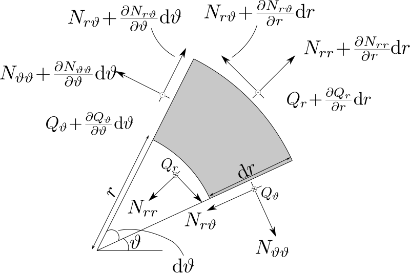
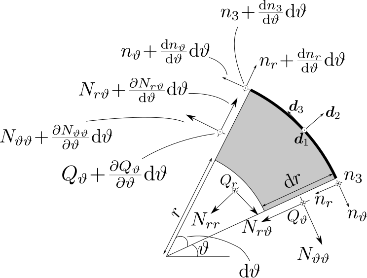
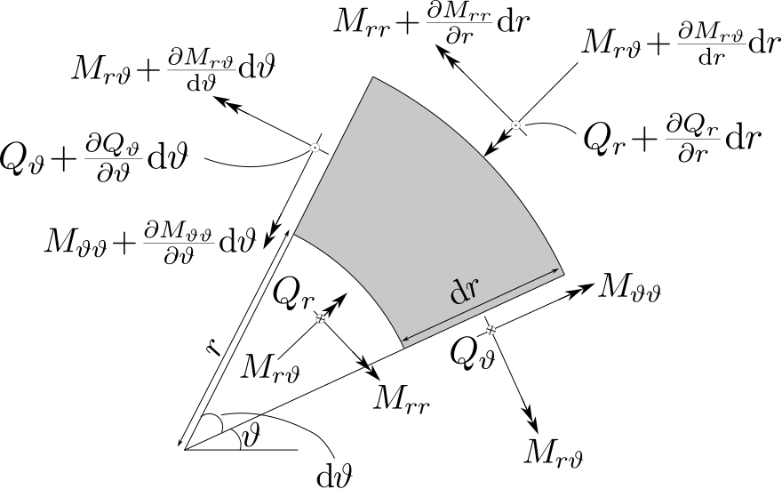
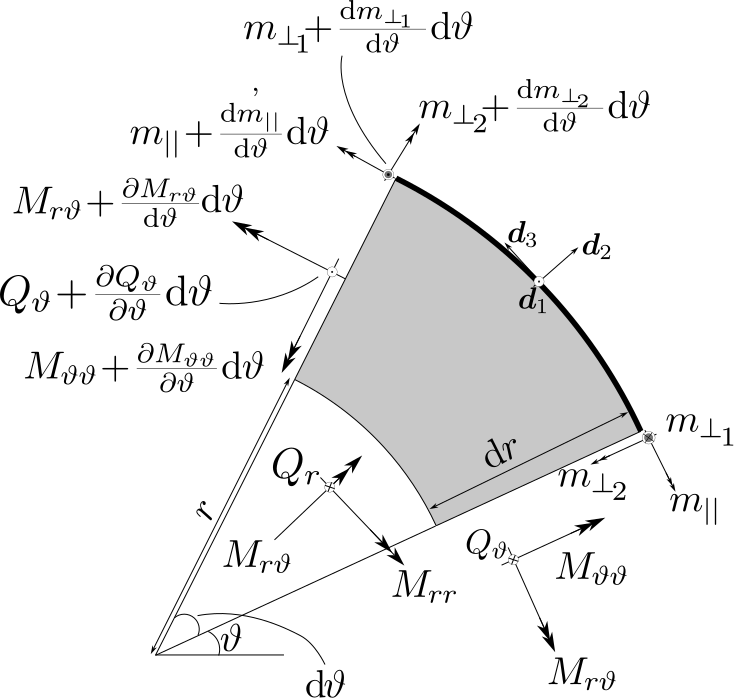
Methodology
Linearization and Null Spaces
\[\mathfrak{L}(\lambda)[\boldsymbol{X}]= \left(\begin{aligned} &\nabla\cdot\mathbf{P},\\ &\nabla\cdot\left(\boldsymbol{f}+\nabla\cdot\mathbf{M}\right),\\ &6\left((1-\nu)\left(\nabla\boldsymbol{v}+\nabla\boldsymbol{v}^{\top}\right)+2\nu\nabla\cdot\boldsymbol{v}\mathbf{I}\right)-\mathbf{P},\\ &-\frac{h^2}{\lambda^2}((1-\nu)\nabla^{2}{z}+\nu\Delta{z}\mathbf{I})-\mathbf{M},\\ &{{\boldsymbol{f}}}-\frac{12}{\lambda}(1+\nu)(1-\lambda)\nabla{{z}},\\ &(2\mathbf{I}+2(\gamma-\beta){\boldsymbol{\xi}}\otimes{\boldsymbol{\xi}})[\check{\boldsymbol{s}}'']\\ &\quad\quad-2\alpha(\gamma-\beta)({\boldsymbol{\xi}}\otimes\boldsymbol{\nu}+\boldsymbol{\nu}\otimes{\boldsymbol{\xi}})[\check{\boldsymbol{s}}']\\ &\quad\quad\quad+{\boldsymbol{\xi}}\wedge(\check{\boldsymbol{n}}-\frac{12}{\alpha}(1+\nu)(\lambda-1)(\underline{\boldsymbol{v}}'+z'\boldsymbol{e}_{3})),\\ &\underline{\boldsymbol{v}}'+\underline{z}'\boldsymbol{e}_{3}-2\check{\boldsymbol{s}}\wedge{\boldsymbol{\xi}}. \end{aligned}\right)\]
\[ \boldsymbol{X}=\big(\boldsymbol{v},{z},\mathbf{P},\mathbf{M},\boldsymbol{f},\boldsymbol{\check{s}},\boldsymbol{\check{n}}\big) \]
\[\text{Planar } k\geq2\] \[v_{r}(r,\vartheta)=A_{0}r+\sum\limits_{k=1}^{\infty}\left(-A_{k}r^{k-1}-C_{k}\frac{k-2+\nu(k+2)}{4+k(1+\nu)}r^{k+1}\right)\cos(k\vartheta)\] \[\ +\sum\limits_{k=1}^{\infty}\left(B_{k}r^{k-1}+D_{k}\frac{k-2+\nu(k+2)}{4+k(1+\nu)}r^{k+1}\right)\sin(k\vartheta),\label{vr_sol_form}\] \[v_{\vartheta}(r,\vartheta)=B_{0}r+\sum\limits_{k=1}^{\infty}\left(B_{k}r^{k-1}+D_{k}r^{k+1}\right)\cos(k\vartheta) +\sum\limits_{k=1}^{\infty}\left(A_{k}r^{k-1}+C_{k}r^{k+1}\right)\sin(k\vartheta)\]
\[\lambda_{k}=\frac{{48+k (24-24 \nu)+\beta k^4 (3 \alpha^3-\alpha^3 \nu)}{+k^2 (-36-3 \beta\alpha^3 -24 \nu+\beta\alpha^3 \nu+12 \nu^2)}}{12 \left(\nu ^2-2 \nu -3\right) \left(k^2-1\right)}\] \[A_{k}:C_{k}=B_{k}:D_{k}=-\frac{(k+1) (-2 \nu +\nu k+k+2)}{\alpha ^2 (k-1) (\nu k+k+4)}:1\]
\[\text{Non planar }\lambda<1\] \[{z}(r,\vartheta)=E_{0}+\sum\limits_{k=2}^{\infty}\Big((A_{k}r^{k}+C_{k}I_{k}(\sqrt{|a_{\lambda}|} r ))\cos(k\vartheta)+(B_{k}r^{k}+D_{k}I_{k}(\sqrt{|a_{\lambda}|} r ))\sin(k\vartheta)\Big)\]
\[\text{Non planar }\lambda>1\] \[{z}(r,\vartheta)=C_{0}J_{0}(\sqrt{|a_{\lambda}|} r )\] \[\ +\sum\limits_{k=1}^{\infty}\Big((A_{k}r^{k}+C_{k}J_{k}(\sqrt{|a_{\lambda}|} r ))\cos(k\vartheta)+(B_{k}r^{k}+D_{k}J_{k}(\sqrt{|a_{\lambda}|} r ))\sin(k\vartheta)\Big)\]
\[a_{\lambda}=12{(1+\nu)}(\lambda-\lambda^2)/{h^2}\]
Local Bifurcation
Theorem Suppose that \(\mathscr{F}\) is at least twice differentiable with respect to its arguments and there exists a null vector
\[X \in \mathcal{N}(\mathcal{L}(\lambda_0))\]
that defines proper isotropy subgroup H. Let \(\mathcal{L}_{\mathrm{H}}(\lambda_0)\) be the H-reduced linearized operator about solution \((0,\lambda_0)\). Assume the following:
\(\dim\!\big(\mathcal{N}(\mathcal{L}_{\mathrm{H}}(\lambda_0))\big)=1\).
\(D_{\lambda}\mathcal{L}_{\mathrm{H}}(\lambda_0)[X]\not\in \mathcal{R}(\mathcal{L}_{\mathrm{H}}(\lambda_0)) \quad \forall X\in\mathcal{N}(\mathcal{L}_{\mathrm{H}}(\lambda_0))\) (provided \(\mathcal{L}_{\mathrm{H}}(\lambda_0)\) is Fredholm of index zero.)
Then, \((0,\lambda_0)\) is a bifurcation point of (2.2.23) such that in every small neighbourhood of \((0,\lambda_0)\), there are non-trivial solution
\[(V_*,\lambda_*) \in D_H \times \mathbb{R}^+ .\]
Moreover, as \(\dim(\mathcal{N}(\mathcal{L}_{\mathrm{H}}(\lambda_0)))=\operatorname{codim}(\mathcal{R}(\mathcal{L}_{\mathrm{H}}(\lambda_0)))=1\), there exists a unique, local, bifurcating branch of solution of form
\[t \mapsto (V(t),\lambda(t)) \in D_H \times \mathbb{R}^+ .\]
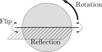


Symmetry Groups under consideration
\[\mathcal{G}=\{r_\theta,er_\theta,fr_\theta,fer_\theta\},\] \[\text{where }\theta\in{\mathbb{R}}_{2\pi}\]
\[ \quad r_{2\pi}=1, \quad e^2=1 \] \[ f^2=1,\quad efef=1 \] \[ er_{\theta}er_{\theta}=1, \quad fr_{\theta}fr_{\theta}=1 \]
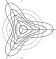
\[\mathtt{Z}_{k}=\{r_{\alpha}, r_{2\alpha},\dotsc,r_{k\alpha},er_{\alpha}, er_{2\alpha},\dotsc,er_{k\alpha},\] \[\quad fr_{\alpha}, fr_{2\alpha},\dotsc,fr_{k\alpha},fer_{\alpha}, fer_{2\alpha},\dotsc,fer_{k\alpha}\}\] \[\quad\text{where $\alpha=2\pi/k$}\]
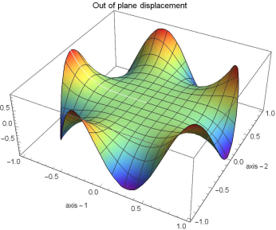
\[\mathtt{D}_{k}=\{r_{\alpha}, r_{2\alpha},\dotsc,r_{k\alpha},er_{\alpha}, er_{2\alpha},\dotsc,er_{k\alpha}\}\] \[\quad\text{where $\alpha=2\pi/k$}\]

\[\mathtt{O}(2)=\{r_\theta,er_\theta\}\] \[\text{where }\theta\in{\mathbb{R}}_{2\pi}\]
Symmetry Operations
\[\boldsymbol{V}:=\big(\boldsymbol{v},z,\mathbf{N}, \mathbf{M},\boldsymbol{f},\boldsymbol{g},\boldsymbol{n}\big)\]
\[(\mathcal{T}_\phi \boldsymbol{V})(r, \theta) = \left( \mathbf{T}_\phi \boldsymbol{v}, z, \mathbf{T}_\phi \mathbf{N} \mathbf{T}_\phi^\top, \mathbf{T}_\phi \mathbf{M} \mathbf{T}_\phi^\top, \mathbf{T}_\phi \boldsymbol{f}, \mathbf{Z}_\phi \boldsymbol{g}, \mathbf{Z}_\phi \boldsymbol{n} \right)^\top (r, \theta - \phi)\] \[(\mathcal{E} \boldsymbol{V})(r, \theta) = \left( \mathbf{J} \boldsymbol{v}, z, \mathbf{J} \mathbf{N} \mathbf{J}, \mathbf{J} \mathbf{M} \mathbf{J}, \mathbf{J} \boldsymbol{f}, -\mathbf{Q} \boldsymbol{g}, -\mathbf{Q} \boldsymbol{n} \right)^\top (r, -\theta)\] \[(\mathcal{F} \boldsymbol{V})(r, \theta) = \left( \mathbf{J} \boldsymbol{v}, -z, \mathbf{J} \mathbf{N} \mathbf{J}, -\mathbf{J} \mathbf{M} \mathbf{J}, -\mathbf{J} \boldsymbol{f}, \mathbf{F} \boldsymbol{g}, -\mathbf{F} \boldsymbol{n} \right)^\top (r, -\theta)\]
\[\mathbf{T}_{\phi} = \begin{bmatrix} \cos \phi & -\sin \phi \\ \sin \phi & \cos \phi \end{bmatrix}\]
\[\mathbf{J} = \begin{bmatrix} 1 & 0 \\ 0 & -1 \end{bmatrix}\]
\[\mathbf{Z}_{\phi} = \begin{bmatrix} \cos \phi & -\sin \phi & 0 \\ \sin \phi & \cos \phi & 0 \\ 0 & 0 & 1 \end{bmatrix}\]
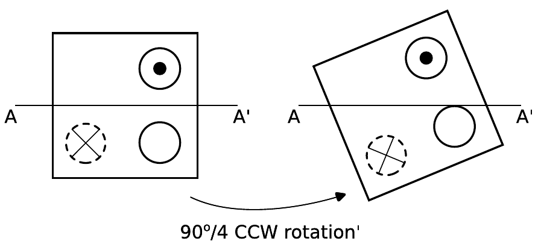
\[\mathbf{Q} = \begin{bmatrix} 1 & 0 & 0 \\ 0 & -1 & 0 \\ 0 & 0 & 1 \end{bmatrix}\]
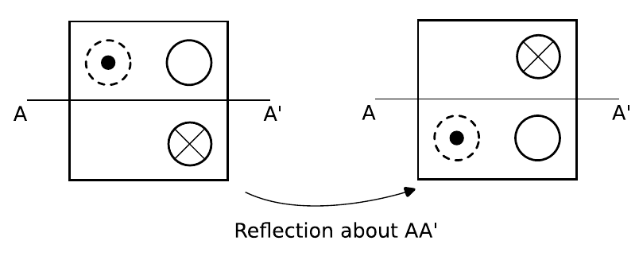
\[\mathbf{F} = \begin{bmatrix} 1 & 0 & 0 \\ 0 & -1 & 0 \\ 0 & 0 & -1 \end{bmatrix}\]
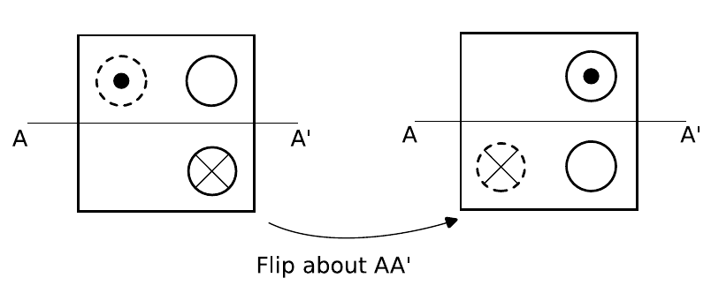
Symmetry reduced spaces
\[\Big(\mathcal{P}_{\mathtt{H}}\boldsymbol{V}\Big)(r,\vartheta)=\boldsymbol{V}(r,\vartheta)\]
\[\mathcal{P}_{\mathtt{H}}\boldsymbol{u}=\int_{\mathtt{H}}\mathcal{T}_{\mathtt{H}}\boldsymbol{u}\,\mathrm{d}\mu(g)\] \[\text{where, }\int_{\mathtt{H}}\mathrm{d}\mu(g)=1\]
\[\mathcal{P}_{\mathtt{H}}\boldsymbol{u}=\frac{1}{\mathrm{size}(\mathtt{H})}\sum_{\mathtt{H}}\mathcal{T}_{\mathtt{H}}\boldsymbol{u}\]
\(\mathtt{D}_{k}\)-reduced space \[\begin{pmatrix} (v_r, v_\vartheta) \\ z \\ [N_{rr}, N_{\vartheta\vartheta}, N_{r\vartheta}] \\ [M_{rr}, M_{\vartheta\vartheta}, M_{r\vartheta}] \\ (f_r, f_\vartheta) \\ (\check{g}_r, \check{g}_\vartheta, \check{g}_3) \\ (\check{n}_r, \check{n}_\vartheta, \check{n}_3) \end{pmatrix}(r, \vartheta) = \begin{pmatrix} (v_r, -v_\vartheta) \\ z \\ [N_{rr}, N_{\vartheta\vartheta}, -N_{r\vartheta}] \\ [M_{rr}, M_{\vartheta\vartheta}, -M_{r\vartheta}] \\ (f_r, -f_\vartheta) \\ (-\check{g}_r, \check{g}_\vartheta, -\check{g}_3) \\ (-\check{n}_r, \check{n}_\vartheta, -\check{n}_3) \end{pmatrix}(r, -\vartheta)\]
\(\mathtt{Z}_{k}\)-reduced space \[\begin{pmatrix} (v_r, v_\vartheta) \\ z \\ [N_{rr}, N_{\vartheta\vartheta}, N_{r\vartheta}] \\ [M_{rr}, M_{\vartheta\vartheta}, M_{r\vartheta}] \\ (f_r, f_\vartheta) \\ (\check{g}_r, \check{g}_\vartheta, \check{g}_3) \\ (\check{n}_r, \check{n}_\vartheta, \check{n}_3) \end{pmatrix}(r, \vartheta) = \begin{pmatrix} (v_r, -v_\vartheta) \\ 0 \\ [N_{rr}, N_{\vartheta\vartheta}, -N_{r\vartheta}] \\ [0, 0,0] \\ (0, 0) \\ (0, 0, -\check{g}_3) \\ (-\check{n}_r, \check{n}_\vartheta,0) \end{pmatrix}(r, -\vartheta)\]
\(\mathtt{O}(2)\)-reduced space \[\begin{pmatrix} (v_r, v_\vartheta) \\ z \\ [N_{rr}, N_{\vartheta\vartheta}, N_{r\vartheta}] \\ [M_{rr}, M_{\vartheta\vartheta}, M_{r\vartheta}] \\ (f_r, f_\vartheta) \\ (\check{g}_r, \check{g}_\vartheta, \check{g}_3) \\ (\check{n}_r, \check{n}_\vartheta, \check{n}_3) \end{pmatrix}(r, \vartheta) = \begin{pmatrix} (v_r, 0) \\ z \\ [N_{rr}, N_{\vartheta\vartheta}, 0] \\ [M_{rr}, M_{\vartheta\vartheta}, 0] \\ (f_r, 0) \\ (0, \check{g}_\vartheta, 0) \\ (0, \check{n}_\vartheta,0) \end{pmatrix}(r)\]
Transversality condition and adjoint operator
\[D_{\lambda}\mathfrak{L}_{\mathrm{H}}(\lambda_0)[X]\not\in \mathcal{R}(\mathfrak{L}_{\mathrm{H}}(\lambda_0)) \quad \forall X\in\mathcal{N}(\mathfrak{L}_{\mathrm{H}}(\lambda_0))\] \[\implies \langle D_{\lambda}\mathfrak{L}_{\mathtt{H}}(\lambda_{0})[\boldsymbol{X}],\boldsymbol{Z}\rangle\neq0 \] where, \(\mathfrak{L}^{\ast}_{\mathtt{H}}(\lambda_{0})[\boldsymbol{Z}]=\boldsymbol{0}\)
\[\langle\mathfrak{L}(\boldsymbol{X}),\boldsymbol{Z}\rangle=\langle\boldsymbol{X},\mathfrak{L}^{\ast}(\boldsymbol{Z})\rangle\]
\[\mathfrak{L}^{\ast}(\lambda)[\boldsymbol{Z}]= \left(\begin{aligned} & -12(1-\nu)\nabla\cdot\mathbf{S}-12\nu\nabla(\mathbf{S}:\mathbf{I}_{2}),\\ &-\frac{h^2}{\lambda^2}(1-\nu)\nabla\cdot(\nabla\cdot\mathbf{T})-\frac{h^2}{\lambda^2}\nu\Delta(\mathbf{T}:\mathbf{I}_{2})+\frac{12}{\lambda}(1+\nu)(1-\lambda)\nabla\cdot\boldsymbol{g},\\ &-\frac{1}{2}\left(\nabla\boldsymbol{u}+\nabla\boldsymbol{u}^{\top}\right)-\mathbf{S},\\ &\nabla^2w-\mathbf{T},\\ &\boldsymbol{g}-\nabla w,\\ &2(\mathbf{I}+(\gamma-\beta){\boldsymbol{\xi}}\otimes{\boldsymbol{\xi}})\boldsymbol{\check{q}}''-2\alpha(\gamma-\beta)({\boldsymbol{\xi}}\otimes\boldsymbol{\nu}+\boldsymbol{\nu}\otimes{\boldsymbol{\xi}})\boldsymbol{\check{q}}'-2{\boldsymbol{\xi}}\wedge\boldsymbol{\check{h}},\\ &\boldsymbol{\check{q}}\wedge{\boldsymbol{\xi}}-\underline{\boldsymbol{u}}'-\underline{w}'\boldsymbol{e}_{3}, \end{aligned}\right)\]
\[\boldsymbol{Z}:=\{\boldsymbol{u},z,\mathbf{S},\mathbf{T},\boldsymbol{g},\check{\boldsymbol{q}},\check{\boldsymbol{h}}\}\]
For \(\mathtt{Z}_{k}\)-reduced problem \[\langle D_{\lambda}\mathfrak{L}_{Z_{k}}(\lambda_{k})[\boldsymbol{X}_{k}],\boldsymbol{Z}_{k}\rangle=-\sqrt{(\boldsymbol{u}\cdot\boldsymbol{u})(\boldsymbol{v}\cdot\boldsymbol{v})}\frac{4 \pi (k-1)^2 (\nu -3)^2 \alpha ^{3-2 k}}{(k \nu +k-2 \nu +2)^2}\neq 0.\]
For \(\mathtt{D}_{k}\)-reduced problem (determided numirically) \[\langle D_{\lambda}\mathfrak{L}_{D_{k}}(\lambda_{k})[\boldsymbol{X}_{k}],\boldsymbol{Z}_{k}\rangle=\sqrt{\frac{\langle w,w\rangle}{\langle z,z\rangle}}\Bigg(\int_{\Omega} \frac{2h^2}{\lambda^3}W(\nabla^{2}z)\mathrm{d}A\] \[\quad + \int_{\Omega} \frac{12}{\lambda^2}(1+\nu)\nabla{{z}}\cdot\nabla z\mathrm{d}A\] \[\quad-\int_{\Gamma}\frac{12}{\alpha}(1+\nu)\underline{z}'^2\mathrm{d}s\Bigg)\ \neq 0\]
For \(\mathtt{O}(2)\)-reduced problem \[\langle D_{\lambda}\mathfrak{L}_{O(2)}(\lambda_{k})[\boldsymbol{X}_{k}],\boldsymbol{Z}_{k}\rangle=\sqrt{\frac{\langle w,w\rangle}{\langle z,z\rangle}}\Bigg(\int_{\Omega} \frac{2h^2}{\lambda^3}W(\nabla^{2}z)\mathrm{d}A\] \[\quad + \int_{\Omega} \frac{12}{\lambda^2}(1+\nu)\nabla{{z}}\cdot\nabla z\mathrm{d}A\Big)\neq0\]
Local bifurcation using Lyapunov–Schmidt reduction
\[\mathcal{D} = \mathcal{N}(\mathfrak{L}(\lambda_k)) \oplus \mathcal{D}_{0}, \quad \mathcal{R} = \mathcal{R}_{0} \oplus \mathcal{R}(\mathfrak{L}(\lambda_k))\] \[\mathcal{A} : \mathcal{D} \to \mathcal{N}(\mathfrak{L}(\lambda_k)) \quad \text{and} \quad \mathcal{B} : \mathcal{R} \to \mathcal{R}_{0}\] \[ \mathfrak{F}(\boldsymbol{V},\lambda)=\boldsymbol{0}\implies \left\{\begin{aligned} & \mathcal{B}\mathfrak{F}(\mathcal{A}\boldsymbol{V}+(\mathcal{I}-\mathcal{A})\boldsymbol{V},\lambda)=\boldsymbol{0}\text{ (not locally invertible)}\\ & (\mathcal{I}-\mathcal{B})\mathfrak{F}(\mathcal{A}\boldsymbol{V}+(\mathcal{I}-\mathcal{A})\boldsymbol{V},\lambda)=\boldsymbol{0} \text{ (locally invertible wrt, $(\mathcal{I}-\mathcal{A})\boldsymbol{V}$ )}\\ \end{aligned}\right.\]
\[ \lambda(0) = \lambda_c, \quad \dot{\lambda}(0) = -\frac{1}{2} \frac{\langle \mathrm{D}^2_{\boldsymbol{V}} \mathfrak{F}_{\mathtt{H}}[\boldsymbol{X}_{\mathtt{H}}, \boldsymbol{X}_{\mathtt{H}}], \boldsymbol{Z}_{\mathtt{H}}\rangle}{\langle \mathrm{D}_\lambda \mathfrak{L}_{\mathtt{H}}(\lambda_c)[\boldsymbol{X}_{\mathtt{H}}], \boldsymbol{Z}_{\mathtt{H}} \rangle}, \quad \ddot{\lambda}(0) = -\frac{1}{3} \frac{\langle \boldsymbol{Z}, \boldsymbol{Z}_{\mathtt{H}} \rangle}{\langle \mathrm{D}_\lambda \mathfrak{L}_{\mathtt{H}}(\lambda_c)[\boldsymbol{X}_{\mathtt{H}}], \boldsymbol{Z}_{\mathtt{H}} \rangle} \] \[\boldsymbol{Z} := \mathrm{D}^3_{\boldsymbol{V}} \mathfrak{F}_{\mathtt{H}}(\boldsymbol{0}, \lambda_c)[\boldsymbol{X}_{\mathtt{H}}, \boldsymbol{X}_{\mathtt{H}}, \boldsymbol{X}_{\mathtt{H}}] - 3\mathrm{D}^2_{\boldsymbol{V}} \mathfrak{F}_{\mathtt{H}}(\boldsymbol{0}, \lambda_c)[\boldsymbol{X}_{\mathtt{H}}, \boldsymbol{Y}],\] \[\boldsymbol{Y} := (\mathcal{I} - \mathcal{A})(\mathfrak{L}_{\mathtt{H}}(\lambda_c))^{-1}(\mathcal{I} - \mathcal{B})[\mathrm{D}^2_{\boldsymbol{V}} \mathfrak{F}_{\mathtt{H}}(\boldsymbol{0}, \lambda_c)[\boldsymbol{X}_{\mathtt{H}}, \boldsymbol{X}_{\mathtt{H}}]]\] \[\mathcal{D}_{\mathtt{H}} = \mathcal{N}(\mathfrak{L}_{\mathtt{H}}(\lambda_k)) \oplus \mathcal{D}_{0\mathtt{H}}, \quad \mathcal{R}_{\mathtt{H}} = \mathcal{R}_{0\mathtt{H}} \oplus \mathcal{R}(\mathfrak{L}_{\mathtt{H}}(\lambda_k))\] \[\mathcal{A} : \mathcal{D}_{\mathtt{H}} \to \mathcal{N}(\mathfrak{L}_{\mathtt{H}}(\lambda_k)) \quad \text{and} \quad \mathcal{B} : \mathcal{R}_{\mathtt{H}} \to \mathcal{R}_{0\mathtt{H}}\]
\[ \lambda(t) = \lambda(0) + t\dot{\lambda}(0) + \frac{t^2}{2}\ddot{\lambda}(0) + o(t^2) \] \[ \boldsymbol{V}(t) = \mathbf{0} + t\boldsymbol{X}_{\mathtt{H}} + \frac{1}{2}t^2(-\boldsymbol{Y}) + o(t^2) \]
Symmetry-reduced finite element method (Plate Discretization)
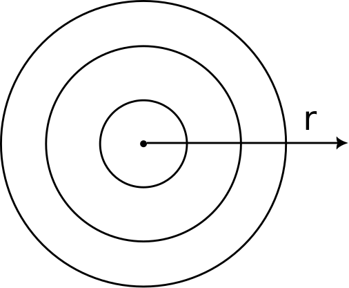
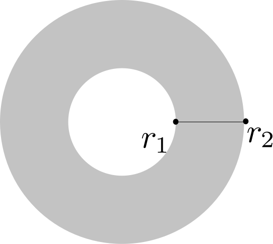
\[\frac{\mathrm{\partial}^{m+n}v}{\mathrm{\partial}r^{m}\vartheta^{n}}=[L_{m}]_{1\times4}[Q_{n}]_{4\times(8M+4)}[V]_{(8M+4)\times1}\]
\[[L_{m}]=\underbrace{\begin{bmatrix} r^{3} &r^{2} &r &1 \end{bmatrix}}_{[R]_{1\times4}}\underbrace{\begin{bmatrix} \frac{1}{f^{3}}&0&0&0\\ -\frac{3r_{m}}{f^{3}}&\frac{1}{f^{2}}&0&0\\ \frac{3r_{m}^2}{f^{3}}&-\frac{2r_{m}}{f^{2}}&\frac{1}{f}&0\\ -\frac{r_{m}^3}{f^{3}}&\frac{r_{m}^{2}}{f^{2}}&-\frac{r_{m}}{f}&1 \end{bmatrix}}_{[S]_{4\times4}}\frac{[D_{m}]_{4\times4}}{f^{m}}\underbrace{\left(\frac{1}{4}\begin{bmatrix} 1&1&-1&1\\ 0&-1&0&1\\ -3&-1&3&-1\\ 2&1&2&-1 \end{bmatrix} \begin{bmatrix} 1&0&0&0\\ 0&f&0&0\\ 0&0&1&0\\ 0&0&0&f \end{bmatrix}\right)}_{[H]_{4\times4}}\]
\[[Q_{n}]=\frac{\mathrm{d}^{n}}{\mathrm{d}\vartheta^{n}}\begin{bmatrix}[T_{\vartheta}]_{1\times(2M+1)} &[0]_{1\times(2M+1)}&[0]_{1\times(2M+1)}&[0]_{1\times(2M+1)}\\ [0]_{1\times(2M+1)}&[T_{\vartheta}]_{1\times(2M+1)}&[0]_{1\times(2M+1)}&[0]_{1\times(2M+1)}\\ [0]_{1\times(2M+1)}&[0]_{1\times(2M+1)}&[T_{\vartheta}]_{1\times(2M+1)}&[0]_{1\times(2M+1)}\\ [0]_{1\times(2M+1)}&[0]_{1\times(2M+1)}&[0]_{1\times(2M+1)}&[T_{\vartheta}]_{1\times(2M+1)}\\ \end{bmatrix}\]
\[[T_{\vartheta}]_{1\times(2M+1)}=\begin{bmatrix} 1&\cos\vartheta&\sin\vartheta&\cos2\vartheta&\sin2\vartheta&...& \cos M\vartheta &\sin M\vartheta \end{bmatrix}\]
\[\Big(u_{r},u_{\vartheta},w\Big)\]
At central node, \[ u_{r}=0,\quad u_{r,r}^{(2n+1)}=0\] \[u_{\vartheta}=u_{r,\vartheta}=0,\quad u_{\vartheta,r}=0\] \[w=0,\quad w_{,r}^{(2n)}=0 \quad \text{for all $n\in$ Integers}\]
Symmetry-reduced finite element method (Rod Discretization)
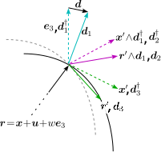
\[v_{,\vartheta^n}=\frac{\mathrm{d}^{n}}{\mathrm{d}\vartheta^{n}}[T_{\vartheta}]_{1\times(2M+1)}[V]_{(2M+1)\times1}=[P_{n}]_{1\times(2M+1)}[V]_{(2M+1)\times1}\]
\[\boldsymbol{d}_{1}=\boldsymbol{d}+\boldsymbol{d}_{1}^{\dagger},\, \boldsymbol{d}_{3}=\boldsymbol{r}',\, \boldsymbol{d}_{2}=\boldsymbol{d}_{3}\wedge\boldsymbol{d}_{1}\] \[(\boldsymbol{d}_{}+\boldsymbol{d}_{1}^{\dagger})\cdot(\boldsymbol{d}_{}+\boldsymbol{d}_{1}^{\dagger})=1 ,\quad \boldsymbol{r}'\cdot\boldsymbol{r}'=1, \quad(\boldsymbol{d}+\boldsymbol{d}_{1}^{\dagger})\cdot\boldsymbol{r}'=0\]
\[\Big(u_{r},u_{\vartheta},w, d_{r},d_{\vartheta},d_{3}, c_{1}, c_{2}, c_{3}\Big)\]
Results
Results and discussion
Engineering Parameters
| Engineering parameters | A (Copper/Steel) | B (Pumpkin Flesh/Skin) | C (1:100) | D (100:1) |
|---|---|---|---|---|
| \(E_{plate}\) | 110 GPa | 0.6 E | 1 GPa | 100 GPa |
| \(\nu_{plate}\) | 0.34 | 0.5 | 0.3 | 0.3 |
| \(h_{plate}\) | 0.002 m | 0.002 m | 0.002 | 0.002 |
| \(E_{rod}\) | 200 GPa | 1 E | 100 GPa | 1 GPa |
| \(\nu_{rod}\) | 0.3 | 0.3 | 0.3 | 0.3 |
| \(\mathfrak{D}_R\) | 0.028 m | 0.028 m | 0.028 m | 0.028 m |
| rod diameter | 0.002 m | 0.002 m | 0.002 m | 0.002 m |
Problem Parameters
| Parameter values | A | B | C | D |
|---|---|---|---|---|
| \(\beta\) | 0.00276149 | 0.00214668 | 0.156278 | 0.0000156278 |
| \(\gamma\) | 0.00212422 | 0.00165129 | 0.120214 | 0.0000120214 |
| \(\nu\) | 0.34 | 0.5 | 0.3 | 0.3 |
| \(h\) | 0.142857 | 0.142857 | 0.142857 | 0.142857 |

Results and discussion (Bifurcation curves)
Results and discussion (Post Buckled shape)
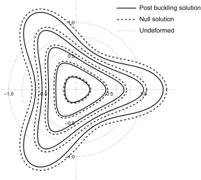
Results and discussion (Nature of Bifurcation)
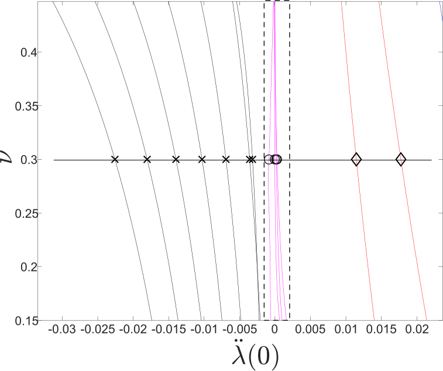
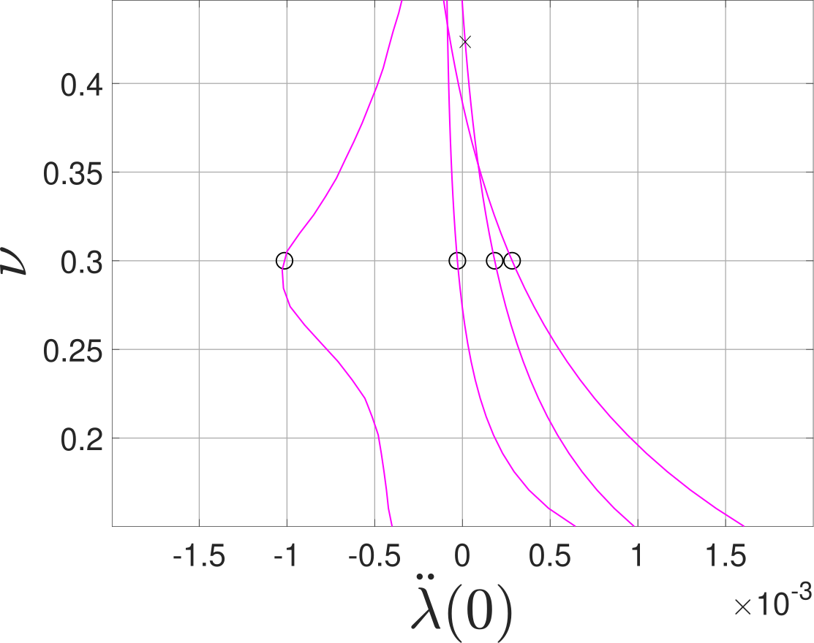
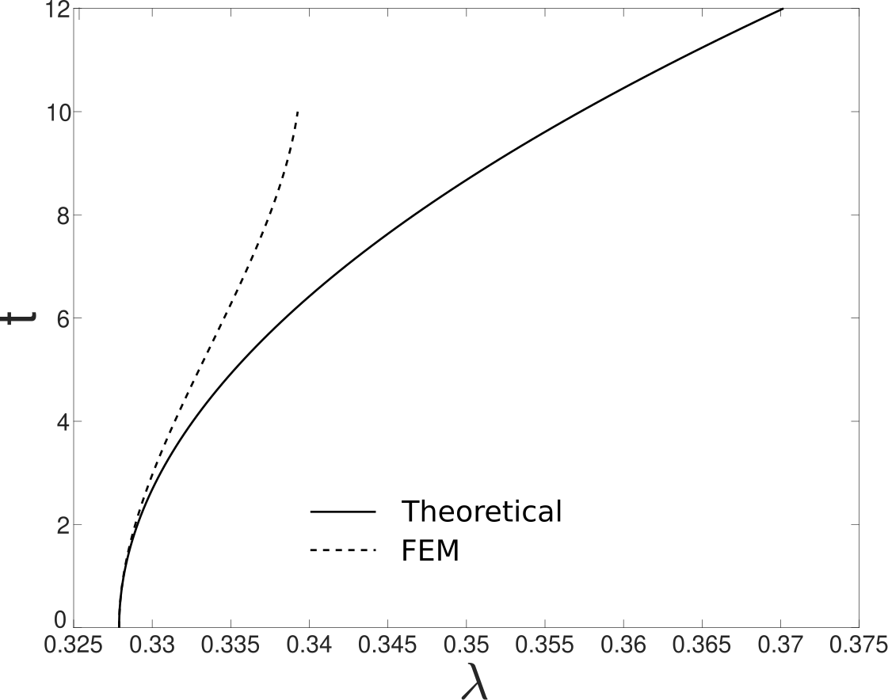
Conclusion
Summary
Geometric & Material Effects
- \(\lambda > 1\) (Plate > Rod): Rod acts as a Dirichlet boundary due to inextensibility; no active influence on mode shapes.
- \(\lambda < 1\): Finite number of modes observed (planar and non-planar).
- Rod Twisting Stiffness: Negligible impact on critical points and bifurcation curves (bending dominates).
- Soft Plates (\(E_{plate} \ll E_{rod}\)): Emergence of intersecting sweep curves and high-dimensional null spaces, necessitating symmetry-based reductions.
Bifurcation & Stability
- All identified critical points are bifurcation points.
- Regime Transition:
- Standard parameters: Supercritical (Stable).
- Soft plate limits: Transition to Subcritical (Unstable).
- FEM Validation: Symmetry-reduced FEM successfully verified local supercritical behavior.
Limitations
- von-Kármán Model: Limited to small strains and moderate rotations (unsuitable for large 3D edge deformations).
- Kirchhoff Rod: Restricts coupling behavior when the plate is under tension.
Limitations & Future Work
Current Model Constraints
- Rod vs. String: Assumption of non-zero stiffness (\(\beta, \gamma\neq 0\)) limits applicability to rods (not strings).
- Deformation Limits: Use of von-Kármán plate model restricts analysis to small deformations, despite the rod model’s capability for large deformations.
Avenues for Future Research
- Advanced Shell Models: Adopt alternative models to study large post-buckling deformations.
- Chiral Rods: Incorporate chiral models to better represent twisting stiffness effects.
- Symmetry Exploitation: Further analysis of null space symmetries to map bifurcation branches.
Key Contributions
Symmetry-Based Analytical Framework
- Methodology: Leverages Lyapunov-Schmidt Reduction for robust analysis of non-linear elasticity.
- Advantage over Commercial Software:
- Commercial tools lack built-in symmetry detection.
- They struggle to trace closely spaced post-buckling curves.
- Our Solution: Partitions solution space by symmetry sub-groups to clearly separate and track distinct branches.
Framework Boundaries
- Ellipticity: Relies on governing PDEs being elliptic; cannot model plasticity or viscoelasticity.
- Idealized Symmetry: Cannot detect solutions arising from non-symmetric defects (unless they align with a specific symmetry group).
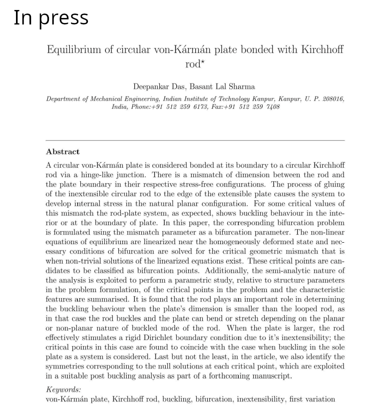
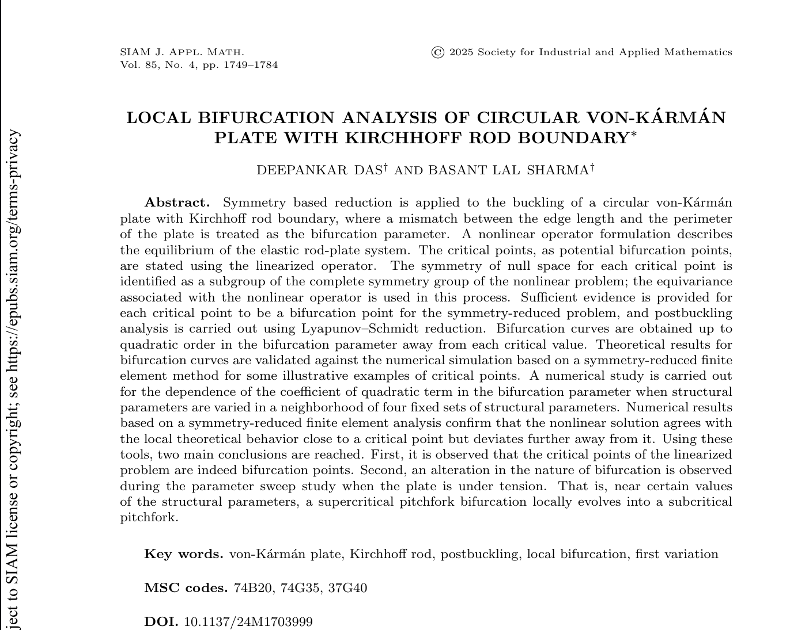
THANK YOU